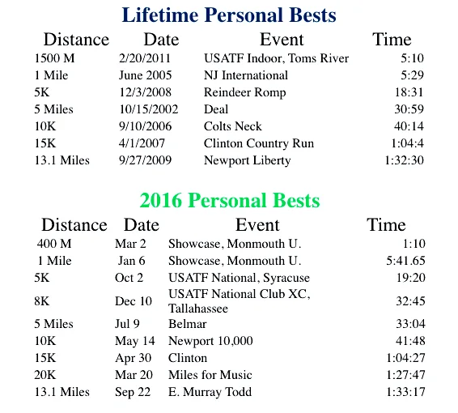

Athlete: Scott Linnell Age: 60 Hometown: Colts Neck, NJShore AC member since: 2008 e-mail  Video of 2008 MOC Girl's 1600M Race: 2023 Shore AC LDR Status Report sac_2023_ldr_status.pptxFile Size: 42653 kbFile Type: pptxDownload File